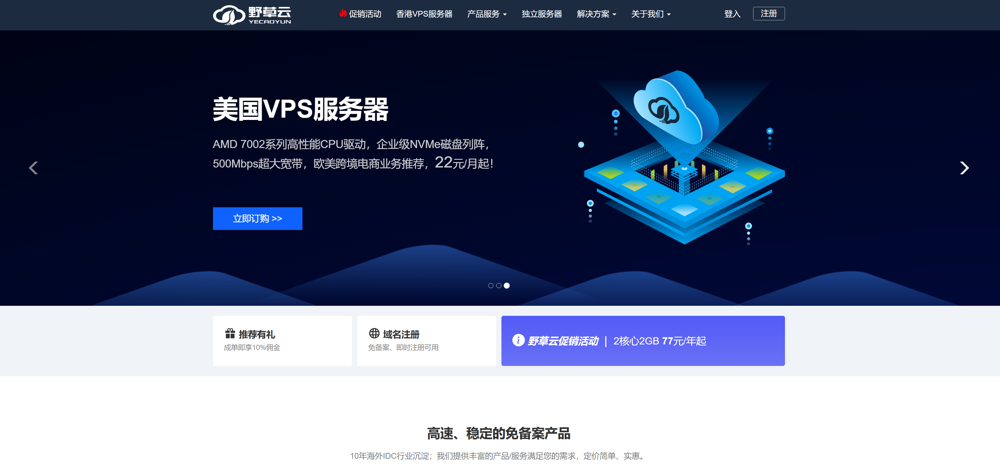

挑 VPS 可不是随便点几下就完事的事情。市场上 VPS 商家太多、套餐五花八门，便宜的可能速度慢得抓狂，高配的又贵得让人心疼。再加上不同机房、线路、带宽、流量限制和隐藏费用，稍不注意就容易踩坑。
不管你是想建个人网站、WordPress 博客，还是需要一台能科学上网、搭梯子、跑任务的 VPS，选对商家和配置才是关键。 这篇指南帮你理清思路，告诉你哪些 VPS 值得买、哪些坑要避开，同时还会教你如何测试网络性能、了解退款政策和识别隐藏费用，让你用得安心又划算。
如何根据需求选择VPS
在挑选 VPS服务器 时，不同的用途决定了你需要关注的重点。 如果是做 跨境电商，最重要的是网络速度和全球访问的稳定性， 建议优先考虑线路优化良好的方案，例如 CN2 GIA VPS推荐、香港低延迟VPS 或者 美国VPS服务器。 这些节点不仅能兼顾国内买家和欧美客户的访问速度，还能在跨境广告推广高流量的情况下保持网站稳定。 对于有较大访问量或需要保障安全的卖家，还可以选择 大带宽VPS 或 高防御VPS，有效避免因攻击或流量过载导致的宕机问题。
如果是做 博客建站，则更看重长期性价比和SEO优化效果，可以选择 支持WordPress VPS建站 的方案，搭配 独立IP VPS主机 和 SSD VPS高速硬盘，能够显著提升网站加载速度与搜索引擎排名。 对于刚开始做个人博客或内容站点的用户，可以选择 便宜好用的国外VPS 起步； 而中大型网站则更适合 可扩展的云VPS，方便后期升级CPU、内存和带宽，支持更大规模的流量增长。
而对于需要 搭梯子、科学上网 的用户，则应重点考虑线路质量和解锁能力，选择 美国VPS、日本VPS 或 香港CN2 VPS，不仅速度快，而且对 Netflix、Disney+、TikTok、ChatGPT 等国际服务的解锁更友好。
高性价比VPS商家推荐
| 商家 | 亮点 / 优势 | 推荐用途 | 适合人群 |
|---|---|---|---|
| 搬瓦工 | 老牌稳定，CN2 GIA套餐，延迟低、速度快；性价比高，社区口碑好 | 建站 翻墙 TikTok/流媒体 | 想要稳妥上车、长期使用的人 |
| DMIT | 高质量线路 + DDoS 防护；提供高防套餐，性能强悍 | 企业/个人建站 科学上网 高防业务 | 对可用性与性能要求高的个人/企业用户 |
| 丽萨主机 | 支持 全流媒体解锁（YouTube / Netflix / Disney+） | 翻墙 追剧观影 社媒运营 | 海外华人、运营 Instagram / X / YouTube 等 |
| 野草云 | 价格友好，轻量建站合适；个人练手、企业节省成本首选 | 学习/测试 小型网站 入门上手 | 学生、预算有限的个人或中小团队 |
| HostDare | 被视为 BandwagonHost / DMIT 的平替；中等线路质量、性价比尚可 | 翻墙 建站 日常 VPS | 想省钱但又希望质量不太差的用户 |
| Akile | 带宽大、流量足，大进出型任务友好 | 科学上网 大流量传输 下载/上传 | 需要跑流量的用户、传输型业务 |
| wepc.au | 面向 TikTok 的优化线路，原生解锁更省心；部署简单 | TikTok 创作 短视频投放 跨境电商视频 | 只为 TikTok 而来的人；短视频运营团队 |
搬瓦工（BandwagonHost） - 老牌商家
如果你混迹 VPS 圈子一段时间，一定听过 搬瓦工（BandwagonHost） 这个名字。它算是“老牌”海外 VPS 服务商了，很多人把它当作入门 VPS 的首选。
我自己最早就是从搬瓦工开始折腾 VPS 的。那时候完全是个小白，看到大家都在推荐搬瓦工，说它“便宜、稳定、对新手友好”，就试着买了一个套餐，结果一用就用了好几年。

搬瓦工（BandwagonHost） VPS 比较适合：
-
建站：搭建个人博客、小型网站，访问稳定性不错。
-
科学上网/搭梯子：CN2 GIA 套餐延迟低，速度稳定，是很多人首选。
-
学习/练手：新手入门 VPS，熟悉 Linux 环境、建站、脚本部署等。
-
轻量应用：挂个小爬虫、跑个 API 服务，都可以。
搬瓦工（BandwagonHost） 套餐与价格
| 存储空间 | 内存 / CPU | 月流量 | 带宽 | 年付价格 | 购买链接 |
|---|---|---|---|---|---|
| 20GB SSD | 1GB / 2 核 | 1TB | 1Gbps | $49.99 | 立即购买 |
| 40GB SSD | 2GB / 3 核 | 2TB | 1Gbps | $99.99 | 立即购买 |
| 80GB SSD | 4GB / 4 核 | 3TB | 1Gbps | $199.99 | 立即购买 |
| 160GB SSD | 8GB / 5 核 | 4TB | 1Gbps | $399.99 | 立即购买 |
| 320GB SSD | 16GB / 6 核 | 5TB | 1Gbps | $799.99 | 立即购买 |
| 480GB SSD | 24GB / 7 核 | 6TB | 1Gbps | $1,199.99 | 立即购买 |
* 表格中的价格与产品可能因调整导致数据更新滞后，仅供参考
如果你是第一次接触 VPS，或者想找一台 稳定又划算 的海外 VPS 来建站、科学上网，那么搬瓦工绝对可以列入首选。 它的入门套餐年付只要 49.9 美元，价格不算高，性价比还是很不错的。
DMIT - 稳定靠谱的优质选择
DMIT 成立于 2017 年，总部在美国，但主要用户群体是亚洲市场。它的定位一直是 高端 VPS 服务商，主打 CN2 GIA、香港和美国洛杉矶高质量线路。 相较于便宜商家，DMIT 的价格不低，但稳定性、速度和售后支持都在业内属于一线水准。我在 2021 年买过 DMIT 的香港 CN2 GIA 套餐，跑了一年多，体验非常稳。

我选择 DMIT 的原因很简单。首先，它的网络线路非常给力，CN2 GIA 和 Premium 线路 对国内用户尤其友好，无论是科学上网还是搭梯子，延迟低、速度快，体验就像“高铁 WiFi”。 其次，稳定性非常强，我最怕买到 VPS 后用着用着就抽风，而 DMIT 虽然价格不是最低，但跑网站、挂代理几乎没掉过线，完全对得起价格。 再者，它的 高防能力 对建站党尤其有用，做外贸或跨境电商时，小流量攻击也能轻松应对，免去后顾之忧。 最后，售后也很靠谱，遇到配置或网络问题，响应迅速，不像一些便宜 VPS 商家，工单要么不回，要么回得慢，总体来说，DMIT 提供的是一个长期稳定、省心的高质量 VPS 解决方案。
结合我个人的使用体验，DMIT VPS 比较适合：
-
建站党（跨境电商、博客）
稳定 + 高防，适合长期建站。国内访问速度表现不错，不会出现客户打开半天才出来页面的尴尬。
-
科学上网 / 搭梯子
这是它家的强项，CN2 GIA + 稳定线路，用起来非常顺畅；无论是刷 YouTube、Netflix 还是使用 ChatGPT或者社交媒体平台，都能满足。
-
需要高稳定性的用户
如果你是长期用 VPS 工作或生活的用户，宁愿多花点钱买省心，也别被几美元的低价 VPS 诱惑。DMIT 是典型的“花钱买稳定”的选择。
DMIT 套餐与价格
美国洛杉矶 Premium Network| 套餐 | 处理器 / 内存 | 硬盘 | 流量 | 带宽 | 价格 | 购买链接 |
|---|---|---|---|---|---|---|
| TINY | 1 核 / 2GB | 20GB SSD | 1000GB | 1Gbps | $9.99/月 | 立即购买 |
| 2 核 / 2GB | 40GB SSD | 1500GB | 4Gbps | $14.90/月 | 立即购买 | |
| STARTER | 2 核 / 2GB | 80GB SSD | 3000GB | 10Gbps | $29.90/月 | 立即购买 |
| 套餐 | 处理器 / 内存 | 硬盘 | 流量 | 带宽 | 价格 | 购买链接 |
|---|---|---|---|---|---|---|
| TINY | 1 核 / 1GB | 20GB SSD | 500GB | 1Gbps | $39.90/月 | 立即购买 |
| STARTER | 1 核 / 2GB | 40GB SSD | 1000GB | 1Gbps | $79.90/月 | 立即购买 |
| MINI | 2 核 / 2GB | 60GB SSD | 1500GB | 1Gbps | $119.90/月 | 立即购买 |
| 套餐 | 处理器 / 内存 | 硬盘 | 流量 | 带宽 | 价格 | 购买链接 |
|---|---|---|---|---|---|---|
| TINY | 1 核 / 1GB | 20GB SSD | 500GB | 1Gbps | $21.90/月 | 立即购买 |
| STARTER | 1 核 / 2GB | 40GB SSD | 1000GB | 1Gbps | $39.90/月 | 立即购买 |
| MINI | 2 核 / 2GB | 60GB SSD | 2000GB | 1Gbps | $79.90/月 | 立即购买 |
* 表格中的价格与产品可能因调整导致数据更新滞后，仅供参考
虽然 DMIT 的价格相比一些小厂商并不算低，但它凭借优质线路和出色的服务，成为了性价比极高的高端 VPS 服务商。 坦白说，如果你只是偶尔玩玩 VPS、预算有限，可能会觉得它价格稍高。但如果你像我一样，希望拥有一台能 长期使用、稳定、省心 的 VPS，无论是建站还是搭梯子、科学上网，DMIT 都是非常值得推荐的。
我自己已经续费了一年，并且计划将更多项目迁移到 DMIT 上。如果你对 VPS 的要求和我一样，追求稳定、安心的长期使用体验，那么不妨亲自试试 DMIT，相信它会带来不一样的感受。
丽萨主机 - 专注于高端CN2线路的优质之选
丽萨主机（LizaHost） 是一家主打高性价比的 VPS 服务商，常见机房分布在 香港、日本、新加坡、美国西海岸 等地，网络优化比较友好，适合有亚洲和北美访问需求的用户。 它家的产品特点是 价格实惠、线路多样，同时提供按月和按年计费方式，适合新手用户建站、博客建站、轻量化应用部署。不过丽萨主机整体规模不算大，建议购买前留意售后响应和节点稳定性。

丽萨主机 VPS 比较适合：
-
跨境电商建站：免备案建站更省心。
-
社交媒体运营：TikTok、Facebook、Instagram 等多账号管理。
-
全流媒体解锁：Netflix、Disney+、ChatGPT 等海外服务无障碍访问。
-
科学上网/搭梯子：稳定节点，延迟低，体验好。
丽萨主机 套餐与价格
丽萨主机的套餐覆盖从入门到高配，常见的年付在 30~50 美元左右 的低配 VPS 就能满足基础需求。如果做 TikTok 或跨境电商，建议上中高配套餐，带宽更大更稳定。
| 套餐名称 | 配置 | 价格 | 购买链接 |
|---|---|---|---|
| 美国9929住宅IP | KVM/1核/1G/20GNVMe固态硬盘/60Mbps带宽/2000GB 流量 | ¥88/月 | 立即购买 |
| 美国4837进阶版住宅IP | KVM/2核/2G/40GNVMe固态硬盘/500Mbps带宽/8000GB 流量 | ¥100/月 | 立即购买 |
| 香港三网CMIISP | KVM/2核/2G/40G NVMe固态硬盘/50Mbps带宽/5000GB 流量 | ¥188/月 | 立即购买 |
| 香港HGC原生住宅IP | KVM/2核/2G/40G NVMe固态硬盘/100Mbps带宽/5000GB 流量 | ¥299/月 | 立即购买 |
| 英国双ISP住宅IP | KVM/1核/1G/10GNVMe固态硬盘/300Mbps带宽/6000GB 流量 | ¥68/月 | 立即购买 |
| 韩国双ISP住宅IP | KVM/1核/1G/20GNVMe固态硬盘/100Mbps带宽/3000GB 流量 | ¥99/月 | 立即购买 |
* 表格中的价格与产品可能因调整导致数据更新滞后，仅供参考
如果你平时需要用 VPS 来做 社交媒体运营（TikTok、Facebook、YouTube 等），或者想要一台能 解锁全流媒体 的服务器，那么丽萨主机（LizaHost）一定值得了解一下。 相比传统 VPS 提供商，丽萨主机最大的特色就是：解锁能力强，特别适合海外用户做内容分发、跨境电商和视频平台。
野草云 - 个人入门和企业低成本建站的好选择
在 VPS 行业里，除了搬瓦工、DMIT 这样的老牌商家，也有一些性价比很高的国产商家。 野草云（Yecaoyun） 就是其中之一，主打 价格实惠、套餐灵活，既能满足个人站长的需求，也适合企业用户节省开销。

我觉得 野草云（Yecaoyun） 最大的优势在于性价比。 它的套餐覆盖面广，从入门到高配都有，而且价格比同类商家实惠不少。再加上支持支付宝和微信支付，新手上手几乎没有门槛。 我自己用它搭过 WordPress 和小型电商站，整体稳定性和速度都挺靠谱的，对个人站长和中小企业来说是个不错的选择。
野草云 推荐用途：
-
个人建站：博客、小型 CMS、WordPress 站点
-
学习/练手：Linux 系统操作、建站实践、服务器环境配置
-
企业节省成本：适合对带宽、流量要求不高的业务
-
跨境业务：香港和海外节点可用于电商站点部署
野草云 套餐与价格
野草云的套餐选择灵活，香港和美国机房都有，价格很实惠。 月付最低 ≈ 22 元 就能入手基础 SSD VPS，美国洛杉矶 GIA 节点的入门方案月付也只需 ≈ 38 元。支持支付宝和微信支付，特别适合预算有限的新手或轻量建站用户。
| vCPU | DDR4内存 | SSD存储 | 宽带/月流量 | DDOS防御 | 价格 | 购买 |
|---|---|---|---|---|---|---|
| 1核 | 1GB | 15GB | 300Mbps / 1TB | 10GB | ¥22/月 | 立即购买 |
| 热销 2核 | 2GB | 15GB | 300Mbps / 1TB | 10GB | ¥26/月 | 立即购买 |
| 热销 2核 | 4GB | 30GB | 300Mbps / 2TB | 10GB | ¥36/月 | 立即购买 |
| 热销 4核 | 8GB | 70GB | 300Mbps / 4TB | 10GB | ¥69/月 | 立即购买 |
| 6核 | 10GB | 100GB | 300Mbps / 6TB | 10GB | ¥109/月 | 立即购买 |
| 8核 | 16GB | 130GB | 300Mbps / 8TB | 10GB | ¥159/月 | 立即购买 |
* 表格中的价格与产品可能因调整导致数据更新滞后，仅供参考
如果你预算有限，或者只是想要一台便宜好用的 VPS 来练手、建小网站， 野草云 是一个性价比很高的选择。 对于企业来说，它也能作为节省成本的替代方案。
HostDare - 便宜 CN2 VPS
如果你需要一台 美国 VPS，既要便宜，又要对国内访问友好，那么 HostDare 是一个值得考虑的选择。 它成立于 2014 年，总部位于新加坡，在业内知名度不算高，但凭借 CN2 优化线路 和 超高性价比，在国内用户中积累了不错的口碑。

HostDare 提供多种线路方案，包括 CN2 GIA、CU VIP、CMI 等，对中国大陆访问比较友好。特别是 CN2 GIA，延迟低，丢包少，很适合建站或科学上网。
HostDare 推荐用途：
-
国内用户建站：CN2 优化线路保证访问速度快
-
轻量应用：博客、小型论坛、企业站点
-
科学上网：延迟低，稳定性不错，BandwagonHost、dmit的平替选择
-
学习/练手：价格便宜，新手上手无压力
HostDare 套餐与价格
不同套餐和线路的价格会随促销有所波动，建议关注官网优惠信息
| 方案 | CPU / 内存 | 硬盘容量 | 带宽（月流量） | 上传速度 | 价格 | 购买链接 |
|---|---|---|---|---|---|---|
| CKVM1 | 1 核 / 756 MB | 35 GB | 600 GB/月 | 50 Mbps | $49.99/年 | 立即购买 |
| CKVM2 | 2 核 / 1.5 GB | 75 GB | 1000 GB/月 | 60 Mbps | $76.99/年 | 立即购买 |
| CKVM3 | 3 核 / 4 GB | 150 GB | 1500 GB/月 | 80 Mbps | $112.99/半年 | 立即购买 |
| CKVM4 | 4 核 / 8 GB | 300 GB | 2500 GB/月 | 100 Mbps | $49.99/月 | 立即购买 |
| CKVM5 | 5 核 / 16 GB | 600 GB | 3500 GB/月 | 100 Mbps | $89.99/月 | 立即购买 |
| CKVM6 | 1 核 / 756 MB | 150 GB | 600 GB/月 | 50 Mbps | $66.99/年 | 立即购买 |
| CKVM7 | 2 核 / 1.5 GB | 300 GB | 1000 GB/月 | 60 Mbps | $133.99/年 | 立即购买 |
| CKVM8 | 3 核 / 4 GB | 450 GB | 1500 GB/月 | 80 Mbps | $66.99/季度 | 立即购买 |
* 表格中的价格与产品可能因调整导致数据更新滞后，仅供参考
HostDare 的最大亮点就是 便宜 + CN2 优化线路，非常适合对国内访问速度有需求、但预算有限的用户。 虽然品牌知名度不如 DMIT、搬瓦工，但凭借实惠的价格和对中国友好的线路，依然值得入手。
AkileCloud - 高性价比流媒体解锁 VPS
如果你想要一台 既能看海外流媒体，又价格合理 的 VPS， AkileCloud 值得关注。 它提供多个地区节点，包括 香港、日本、台湾、新加坡、美国 等，带宽大、网络稳定，非常适合观看 Netflix、Disney+、YouTube Premium 等海外平台。

AkileCloud 的优势在于 多地区机房、流媒体解锁和高带宽，无论是香港、日本、美国等节点，都能保证访问速度快、延迟低。它支持 Netflix、Disney+、YouTube Premium 等海外平台， 高清视频播放流畅，同时套餐灵活，从入门 1 核 1GB 到高配方案都有，价格亲民， 还支持支付宝、微信、信用卡和 USDT 等多种支付方式，国内用户购买非常方便，是想看海外内容、科学上网或轻量建站用户的不错选择。
AkileCloud 推荐用途：
-
海外流媒体观看：解锁 Netflix、Disney+ 等平台
-
科学上网或远程访问：网络稳定、延迟低
-
轻量建站或练手：入门套餐经济实惠
-
大流量传输：高清视频和文件下载都不卡
AkileCloud 套餐与价格
不同套餐和线路的价格会随促销有所波动，建议关注官网优惠信息
| 套餐名称 | 月付价格 | CPU / 内存 | 硬盘 | 月流量 / 带宽 | 特色优势 | 购买 |
|---|---|---|---|---|---|---|
| HKSM-Mini | ¥29.99 | 1 核 / 1GB | 10GB | 2500GB / 1000M | 性价比优选 | 立即购买 |
| HKSM-UNLIMITED | ¥187.50 | 2 核 / 2GB | 20GB | 无限制 / 500M | 无限流量 | 立即购买 |
* 表格中的价格与产品可能因调整导致数据更新滞后，仅供参考
AkileCloud = 多地区节点 + 流媒体解锁 + 高带宽 + 灵活套餐。 如果你想看海外内容、科学上网或做轻量建站，它都是非常值得入手的选择。
WePC - TikTok 优化 VPS
WePC 是一家澳大利亚华人运营的 VPS 服务商，成立于 2022 年，隶属于 ZGX PTY LTD，提供多地区 VPS 服务，包括澳大利亚、香港、日本、美国等节点。 其主打产品包括 TikTok 专区 VPS、原生 IP VPS、住宅 IP VPS 等，适用于 TikTok 视频直播、科学上网、流媒体观看等场景。

WePC 提供多地区、优化线路的 VPS 服务，适用于 TikTok 直播、科学上网、流媒体观看等场景。
WePC 套餐与价格
WePC 提供多地区 VPS，包括香港、韩国、美国、荷兰和澳大利亚节点，套餐从入门 1 核 0.5‑1GB 到高配方案都有，月付价格约 20‑40 元人民币起，年付优惠更低。 部分线路支持 CN2/AS9929 或 TikTok 优化，带宽大、延迟低，非常适合海外社交媒体运营、科学上网或流媒体观看，同时支持支付宝、信用卡和 PayPal 支付。
| 地区 / 类型 | 配置 | 带宽 / 流量 | 价格 | 备注 | 链接 |
|---|---|---|---|---|---|
| 深港IEPL中转_0503 | 深港IEPL | 300Mbps/500 GB/3个中转/2倍率 | ¥91.78/月 | 禁用 SOCKS/HTTP/TLS | 购买 |
| 阿联酋TikTok专用 | 1核/0.5GB内存/10GBSSD | 100Mbps/2TB双向流量 | ¥114.84/月 | TIKTOK视频/直播/建议中转 | 购买 |
| 加拿大原生IP_TK专用 | 1核/512MB内存/10GBSSD | 200Mbps/1TB双向流量 | ¥59.50/月 | 发视频/起号/非优化线路建议中转 | 购买 |
| 新加坡家宽TK直播 | 2 核/1GB内存/10G SSD | 200Mbps/2TB双向流量 | ¥114.84/月 | 直播建议中转, 移动可直连 | 购买 |
| 西班牙TikTok专用 | 1核/0.5 GB内存/10GBSSD | 100Mbps/1TB双向流量 | ¥91.78/月 | 必须加中转才能正常 | 购买 |
| 印度尼西亚TikTok专用 | 2核/1GB内存/10GBSSD | 50Mbps/2TB双向流量 | ¥91.78/月 | 联通电信需中转,部分移动优秀 | 购买 |
| 菲律宾TikTok专用 | 1核/512MB内存/10GBSSD | 50Mbps/1TB双向流量 | ¥91.78/月 | 5Mbps超流量限速/少部分区域需要中转 | 购买 |
| 美国纽约双ISP_家宽 | 1核/512MB内存/10GB SSD | 200Mbps/1.5TB双向流量 | ¥59.50/月 | 发视频/起号/非优化线路建议中转 | 购买 |
* 表格中的价格与产品可能因调整导致数据更新滞后，仅供参考
WePC 主打多地区节点和 TikTok 优化线路，适合需要 海外社交媒体运营、科学上网或流媒体观看 的用户。 它提供澳大利亚、香港、美国等节点，部分套餐支持 CN2 GIA 或住宅 IP，延迟低、速度稳定。 套餐灵活，从入门 1 核 1GB 到高配方案都有，同时支持支付宝、信用卡和 PayPal 支付，性价比高，非常适合国内用户入手做短视频运营或轻量建站。
VPS选择避坑攻略
在选择 VPS 时，价格固然重要，但市场上存在许多看似便宜却暗藏风险的套餐。 超低价 VPS、隐藏费用、不稳定网络和复杂退款政策，都可能让你买了之后体验极差甚至造成损失。 下面整理了一些关键注意事项，从超低价陷阱到网络性能测试，再到退款和隐藏费用，帮助你避开常见坑，做出明智选择。
避开超低价陷阱
价格异常低的VPS（如年付低于$10）往往存在严重超售问题，导致性能极差。这些供应商可能：
- 超售服务器资源，导致性能不稳定
- 使用老旧或低质量硬件
- 提供有限或不存在的客户支持
- 可能突然停止服务，导致数据丢失
测试网络性能
购买前务必测试提供商在你所在地区的网络性能：
- 寻找服务商提供的测试IP或试用服务
- 测试不同时间段的速度表现，晚高峰时段最能反映真实网络质量
- 使用ping、traceroute和速度测试工具
- 检查路由路径是否优化
常用测试命令：
ping 测试IPspeedtest-clitraceroute 测试IP
了解退款政策
选择提供退款保证的供应商：
- 信誉良好的服务商通常提供3-7天的退款保证
- 这足够时间测试服务是否满足需求
- 仔细阅读退款条款，了解哪些情况符合退款条件
- 避免那些不提供退款或退款流程复杂的供应商
总结与推荐
根据我的使用经验，对不同需求的推荐如下：
无论选择哪家，都建议先试用月付套餐，满意后再考虑年付优惠。大多数商家提供按小时计费，可以低成本测试不同节点的网络性能。
VPS 常见问题解答 (FAQ)
主要区别在于资源分配和隔离程度：
- 共享主机：多人共享服务器资源，价格便宜但性能受限
- VPS：虚拟化隔离的独立环境，拥有专属CPU、内存资源
- 性能：VPS通常能提供更稳定的性能表现
- 控制权：VPS用户拥有root权限，可以自由安装软件
选择数据中心位置时，主要看你的目标用户群和用途：
- 面向国内用户：建议选择 香港、日本、新加坡 等亚洲机房，延迟低、速度快。
- 面向海外用户：选择目标市场所在区域的机房，比如美国、欧洲，更利于本地访问。
- 科学上网/流媒体：根据需要解锁的流媒体平台选择，例如 美国节点（Netflix、Disney+）、日本节点（动画资源）。
- 价格与性价比：美国 VPS 带宽资源丰富，价格通常更便宜；香港等地区成本高但访问更快。
简单来说，离用户越近，延迟越低；用途不同，选择的机房位置也会不同。
大多数 VPS 同时支持 Linux 与 Windows 系统，常见如下：
- Linux 发行版：Ubuntu、Debian、Rocky Linux、AlmaLinux、CentOS 等，适合建站、开发、运维，稳定且免费。
- Windows Server：Windows Server 2016 / 2019 / 2022，适合需要 Windows 环境的软件、IIS、远程桌面办公。
- 自定义 ISO（部分商家支持）：可上传自己的系统镜像进行安装。
提示：不同商家与机房可选版本可能会有差异，建议提前查看镜像列表。
CN2 GIA（Global Internet Access）和普通 CN2 的主要区别在于网络质量和成本：
- CN2 GIA：延迟更低、丢包率极低，稳定性极佳，适合跨境电商、视频会议、直播、TikTok/YouTube 上传等对速度要求高的应用。
- 普通 CN2：价格更便宜，延迟略高，偶尔有网络波动，适合建站、轻量应用和一般浏览。
总结：CN2 GIA 更快更稳定，但更贵；普通 CN2 性价比更好，适合对网络要求不高的场景。
美国住宅 VPS 是指使用美国真实住宅 IP 地址的虚拟专用服务器。
- 区别于数据中心 VPS：住宅 VPS 的 IP 看起来像家庭宽带用户，更难被网站或平台封锁。
- 适用场景：社交媒体运营（如 TikTok、Instagram）、跨境电商、流媒体解锁、网络营销等。
- 优势：隐私性更高、稳定性好，能更有效避免平台风控。
总结：住宅 VPS 的优势在于 更真实、更隐蔽，但价格通常比普通 VPS 高。
VPS（虚拟专用服务器） 和 独立服务器 的主要区别在于资源独占性和成本：
- VPS：在一台物理服务器上虚拟出来的多个独立环境，用户拥有独立的 CPU、内存、存储等虚拟资源，价格便宜，适合建站、开发、轻量应用。
- 独立服务器：整台物理机器独享，所有硬件资源完全属于用户，性能更强、稳定性更高，适合高并发业务、大型数据库、企业级项目。
总结：VPS 性价比高，适合中小型项目；独立服务器性能强，适合资源需求大或高负载应用。
对于刚接触 VPS 的新手，建议从 入门级套餐 开始：
- 配置：1 核 CPU、1GB 内存、10GB SSD 起步，足够建站、轻量应用或科学上网。
- 价格：通常在 20–40 元/月 区间，风险小、成本低。
- 升级灵活：如果后期有更大需求，可以随时升级到更高配置。
建议新手先选低配、低价 VPS 练手，等需求稳定后再升级，这样最划算。
香港 VPS 贵主要有几个原因：
- 机房成本高：香港土地和电力成本比美国高，运营商费用自然高。
- 网络出口资源有限：香港带宽稀缺，尤其是优质 CN2/三网直连线路，成本更高。
- 低延迟优势：香港 VPS 对中国大陆用户延迟低、访问快，这种网络优势也是价格的体现。
- 机房位置稀缺：香港机房空间有限，供应少，价格自然上涨。
香港 VPS虽然贵，但对中国大陆用户来说网络延迟更低，性价比依然不错，特别适合对延迟敏感的应用。
美国VPS特别是西海岸节点虽然延迟稍高(150-200ms)，但性价比更好，适合预算有限的用户。
推荐几个常用方法：
- 使用
ping命令测试延迟：ping your-server-ip - 下载测试文件：
wget -O /dev/null http://speedtest.tele2.net/100MB.zip - 使用Bench脚本：
wget -qO- bench.sh | bash - 在线工具：speedtest-cli或访问speedtest.net官网测试
基础安全设置步骤：
- 立即修改默认SSH端口(22)
- 禁用root直接登录，创建普通用户+sudo权限
- 设置SSH密钥登录，禁用密码登录
- 配置防火墙(UFW/iptables)，只开放必要端口
- 安装fail2ban防止暴力破解
- 定期更新系统：
apt update && apt upgrade -y
不同 VPS 商家的退款政策不一样，一般有以下几种情况：
- 支持退款保证：部分商家提供 3 天、7 天或 30 天退款保证，新用户可在试用期内申请无理由退款。
- 不支持退款：有些低价或特价套餐通常不支持退款，下单前需确认清楚。
- 条件退款：部分商家仅在服务未开通、或因技术原因无法使用时才允许退款。
建议在下单前仔细阅读商家的退款政策说明，以免产生不必要的纠纷。
从技术上讲，VPS 可以搭建科学上网工具，例如搭建代理服务器或 VPN。但需要注意：
- 合规性：在部分地区，搭建和使用此类服务可能涉及法律或政策风险，需遵守当地法规。
- 商家限制：部分 VPS 提供商的服务条款中明确禁止此类用途，违规则可能被封号。
- 配置难度：需要一定的 Linux 基础与网络知识，新手需谨慎尝试。
因此，在使用 VPS 前，务必先确认合规性和服务商政策。
是否能解锁这些平台，取决于 VPS 的网络线路和 IP 类型：
- Netflix：多数数据中心 IP 会被屏蔽，需要支持流媒体的 VPS 或带原生 IP/住宅 IP 才能稳定解锁。
- TikTok：需要目标地区的本地 IP 才能注册/使用完整功能，美国、日本、新加坡等地区节点更容易成功。
- Facebook：大部分海外 VPS 都可以正常访问，但部分地区可能存在风控，住宅 IP 更稳。
- YouTube：基本所有海外 VPS 都能访问，但要解锁地区限制内容，需要对应国家的节点。
如果主要用途是解锁流媒体或社交平台，建议选择标注支持解锁的 VPS，或使用带住宅 IP 的套餐。
月付和年付各有优缺点，选择时可以根据实际情况考虑：
- 月付：灵活度高，适合新手测试或短期使用，缺点是单月价格更贵。
- 年付：通常比月付更划算，价格能便宜 20%–40%，适合长期稳定使用，但需要一次性支付更高费用。
- 建议：新手可以先买月付体验，确认稳定和速没问题后，再转为年付更省钱。大部分商家年付更划算，通常比月付便宜 15% - 30%。
带宽 和 流量 是衡量 VPS 网络资源的两个关键指标：
- 带宽：指网络传输速率，比如 100Mbps、1Gbps，带宽越大，下载和上传速度越快。
- 流量：指一个计费周期内允许传输的数据总量，比如 1TB/月、2TB/月。超过流量后可能会限速或额外收费。
- 不限流量：部分 VPS 提供商提供不限流量套餐，但通常带宽会相对较小。
简单来说：带宽决定“速度”，流量决定“能用多久”。
完全可以！但要注意以下几点：
- Shopify 主机无需 VPS：Shopify 本身是 SaaS 平台，提供托管服务，一般不需要自己搭建服务器。
- VPS 适用场景：如果你需要在 VPS 上搭建自己的 Shopify 相关工具、自动化脚本、ERP 系统、跨境建站（如 WooCommerce + WordPress）等，VPS 就很适合。
- 节点选择：建议选择靠近目标客户的机房（美国、欧洲、日本等），保证访问速度和稳定性。
- 性能需求：入门级 VPS 足够运行轻量建站和后台工具，如果同时运行大量自动化脚本或流量大的网站，则需要更高配置。
是的，VPS 完全可以用来搭建代理服务器或 VPN，但需要注意以下事项：
- 合规性：在部分地区，搭建和使用代理或 VPN 可能涉及法律或政策风险，请遵守当地法规。
- 商家政策：部分 VPS 提供商在服务条款中禁止搭建此类服务，违反可能被封号。
- 性能要求：运行 VPN 或代理时，CPU、内存和带宽对性能影响大，建议选择配置较高、网络稳定的 VPS。
- 技术要求：需要一定的 Linux 或服务器管理基础，新手建议参考官方教程或现成面板（如 Shadowsocks、OpenVPN、WireGuard）。
选择 VPS 的 CPU 和内存主要根据用途和访问量：
- 轻量建站或博客：1 核 CPU + 1GB 内存即可，适合低访问量网站或个人项目。
- 中小型网站或应用：2 核 CPU + 2–4GB 内存比较合适，可以保证同时处理多个请求。
- 高并发或大型应用：4 核及以上 CPU + 8GB 内存以上，适合流量大、数据处理多的场景。
- 注意事项：CPU 核心越多，内存越大，性能越好，但价格也越高，建议根据实际需求合理选择。
很多海外 VPS 提供商现在都支持支付宝付款，尤其是面向中国用户的商家：
- 常见支持支付宝的商家：搬瓦工（BandwagonHost）、DMIT、丽莎主机、野草云（Yecaoyun）、WePC 等。
- 其他支付方式：大部分 VPS 也支持微信支付、PayPal、信用卡等，选择灵活。
- 注意事项：付款前确认商家页面显示支持支付宝，避免下单后出现无法支付情况。
海外访问速度：美国 CN2 VPS 更适合海外用户，解锁流媒体也更稳定。
是的，VPS 可以搭建自己的邮件服务器，但需要注意以下几点：
- 技术要求高：需要一定的 Linux 基础和邮件服务器配置经验，例如 Postfix、Exim、Dovecot 等。
- IP 信任度：海外 VPS 的 IP 可能被部分邮箱列入黑名单，需要做好反垃圾邮件配置，避免邮件被退回或标记为垃圾邮件。
- 资源需求：邮件服务器长期运行对 CPU、内存和存储有一定要求，尤其是收发量大的情况下。
- 替代方案：如果不想自己管理服务器，可以考虑使用托管邮件服务（如 Google Workspace、Zoho Mail）与 VPS 配合使用。
是否适合取决于你的用途和 VPS 配置：
- 轻量 API 调用或测试：普通 VPS 可以用来运行轻量 AI 应用或调用 ChatGPT API。
- 大型模型训练或推理：需要 GPU 支持的 VPS 或云服务器，普通 CPU VPS 性能不足，速度慢且可能超时。
- 资源需求：AI 模型通常对 CPU、内存和带宽要求高，建议选择高性能 VPS 或云 GPU 节点。
- 联系商家更换 IP
- 购买带住宅 IP 的 VPS
- 使用商家支持的解锁流媒体专线套餐
OpenVZ： 轻量虚拟化，价格便宜，但限制多。
Xen： 稳定性强，适合长期项目。
👉 新手建议优先选择 KVM VPS。
- 换 CN2 GIA 优化线路
- 升级更高配置
- 使用 BBR/锐速 加速优化网络
选择 VPS 时，便宜和贵的套餐各有利弊：
- 便宜 VPS：适合新手、小型网站或轻量应用，性价比高，但资源有限，性能和稳定性一般。
- 贵的 VPS：配置高、带宽大、稳定性好，适合高流量网站、自动化脚本或科学上网，但价格高。
- 建议：根据用途选择，预算有限可以先选择入门级套餐，后期需求增加再升级高配 VPS。